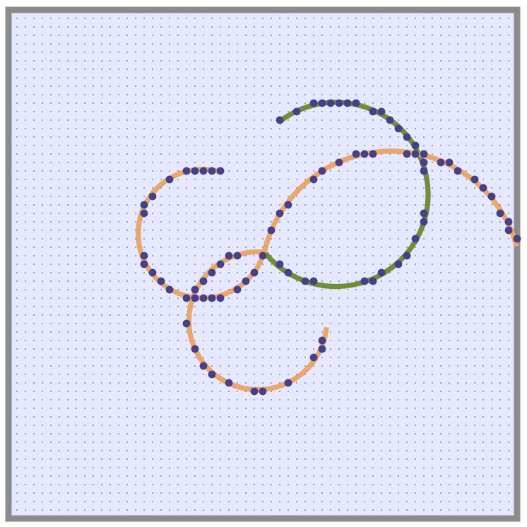

The first step of your analysis is to choose an event. Click on Get Event until you see one that you like and then click Analyze This Event to select it for analysis.
A particle physics decay event is when an unstable particle decays spontaneously into two or more other particles.
For the event you have chosen, the incoming particle decayed to the outgoing particles , and .
The particles in our simulation are traveling in a magnetic field that is pointing into the page. Using the 'right hand rule', we see that positively charged particles will go in a counter-clockwise circle, and negatively charged particles will go in a clockwise circle:
positive charge: CCW
negative charge: CW
Here is a sample decay event (not yours) in which one particle came in (the green line) and decayed into three particles going out (the orange lines):
From the direction of rotation (CW or CCW), we can see that the incoming particle was negatively charged, two of the outgoing particles were negatively charged, and one was positively charged.
The dots represent wires perpendicular to the page. When a charged particle gets close to one of the wires, the wire senses the particle and registers a 'hit' (represented by the larger dots).